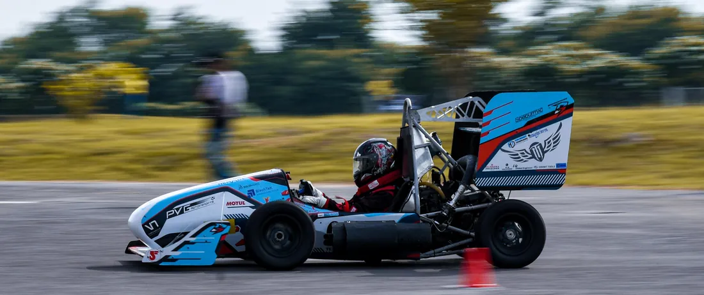

BEngMechanical Engineering
CGPA 8.76/10, equivalent to UK First Class Honours
Minor in Artificial Intelligence and Machine Learning. Fluid Mechanics, Thermodynamics, Turbomachinery, Engineering Mechanics, Manufacturing Processes.
Aerodynamics and CFD engineer with a Distinction MSc in Computational Fluid Dynamics from Cranfield University.
Based in Milton Keynes, open to relocation, and looking for a graduate or junior role in aerodynamics or CFD.
During my undergraduate degree I led the aerodynamics department of a Formula Student team, and I currently work as a CFD consultant on contract for an industrial client.
I work mainly in ANSYS Fluent, automate the repetitive parts with Python and Fluent TUI journals, and am comfortable running simulations on Linux HPC clusters.
CGPA 8.76/10, equivalent to UK First Class Honours
Minor in Artificial Intelligence and Machine Learning. Fluid Mechanics, Thermodynamics, Turbomachinery, Engineering Mechanics, Manufacturing Processes.
Distinction
Turbulence Modelling, Numerical Methods and HPC, Numerical Modelling for Compressible and Incompressible Flows, Grid Generation, Fluid Mechanics and Heat Transfer, Data Analysis and Uncertainty.
Competition results with Team Maverick.
All India Rank 3
SAE SUPRA India 2022
All India Rank 3
Formula Bharat 2023
All India Rank 2
Formula Bharat 2024
Four folders, one for each body of work. Open any of them for the full story.
My MSc thesis, inspired by the McMurtry Spéirling, and a group project on deep learning denoising of MRI data.
About 37.9 kN of downforce against a 34.6 kN target.
Aerodynamic design, CFD, carbon fibre manufacture and on-track correlation for Team Maverick's Formula Student cars, 2021 to 2024.
On the 2022 car: 12% more downforce, 18% less drag and 46.7% less mass.

A multiphase CFD study for Caltec Production Solutions, delivered independently from model construction to report.
Low pressure entrainment brought to within 2.5%.
A Python telemetry analysis of the pole and P2 laps from Q3 at the 2025 Italian Grand Prix, with a ghost car replay.
Official gap reproduced to within 0.006 s.
Soham Dhage